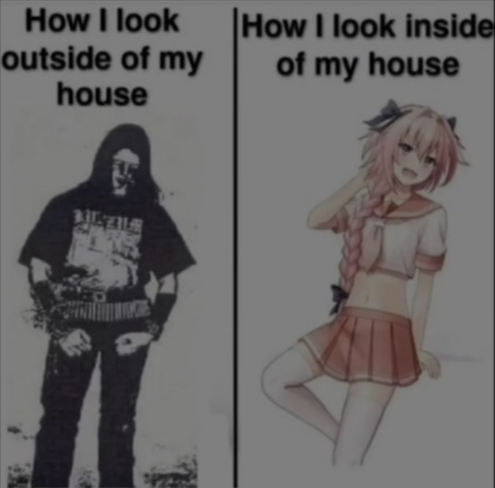

𝐏𝐞𝐫𝐢𝐡𝐞𝐥𝐢𝐨𝐧

I passed my RTA theory test in first try lol
Sometimes there are people who are not meant to
be in your life any longer than they already are.
That's a bittersweet thing, especially when you realise
that their time to leave is over and beyond your control.
I think it makes sense.
If everything was permanent,
then the meaning would not be so clear.
I think a lot about my future friends,
the people I have not met yet for x and x reasons,
but I will meet them and they fascinate me.
Getting older is a very scary thing for me.
Tonight a comet passes by the earth.
...
Apparently it's the first time it's passed by in 50,000 years.
And after that it might have to wait another 50,000 years to pass by again.
I really wanted to try and see it,
but it's raining here.
But the comet still fascinates me.
It must be so lonely to wait 50,000 years.